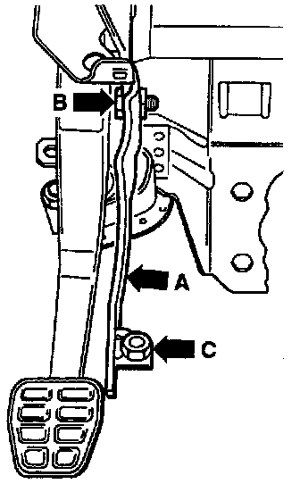

Clutch Master Cylinder: Service and Repair
1. Remove coolant expansion tank and lay to one side.CAUTION: Do not open the cooling system.
2. Disconnect the brake line from the master cylinder and seal.
3. Disconnect the supply hose from the brake fluid reservoir and seal.
4. Unhook relay plate from left retainer.
5. Remove protective plate between relay plate and pedal cluster.
Clutch Cylinder Push Rod:

6. Disconnect master cylinder push rod from pedal cluster as follows:
a. Insert release tool 3309 or equivalent into cut-outs on clutch pedal (arrow a).
b. Inscription "top/oben" faces toward instrument panel.
c. Place pliers 10-208A or equivalent in recesses of release tool (arrows C) and press jaws together.
NOTE: The clutch pedal will be pushed onto the stop in the passenger compartment after completely removing the over-center spring. If necessary, it can be pulled back into the passenger compartment.
Clutch Pedal Bracket:

7. Remove mounting bracket support (arrow A) by removing bolt (arrow B) and nut (arrow C).
8. Remove master cylinder from passenger compartment by removing mounting nuts (arrows) on each side of clutch pedal "A". "B" is a 13 mm, 3/8 in. drive deep well socket.
9. Installation is in reverse order of removal. While doing so, note the following:
Clutch Cylinder Retainer:

a. Retainer "A" must be installed on master cylinder operating rod "B".
b. To engage retainer, press clutch pedal toward bulkhead (direction indicated by arrow). Make sure retainer is located correctly.
c. Bleed clutch hydraulic system after installing master cylinder.